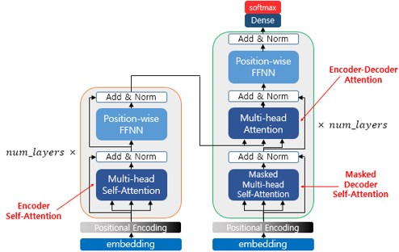
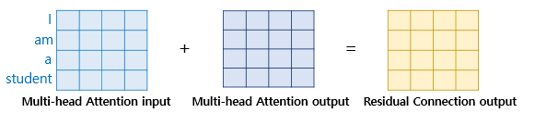

자연어처리: 트랜스포머
Transformer
트랜스포머(Transformer)는 2017년 구글이 발표한 논문인 “Attention is all you need”에서 나온 모델로 기존의 seq2seq의 구조인 인코더-디코더를 따르면서도, 어텐션(Attention)만으로 구현한 모델이다.
트랜스포머 모델은 자연어 처리와 인공지능 분야에서 혁신을 일으킨 최신 딥러닝 아키텍처로, 번역, 요약, 질의응답 등 다양한 언어 관련 작업에서 탁월한 성능을 보여주며 기존 모델들의 한계를 극복하는 데 큰 기여를 하고 있다.
트랜스포머(Transformer)
주요 하이퍼파라미터 (옆의 숫자는 논문에 제시한 값)
\(d_{model} = 512\): 트랜스포머의 인코더와 디코더에서의 정해진 입력과 출력의 크기 & 임베딩 벡터의 차원
\(\text{num\_layers} = 6\): 트랜스포머에서 하나의 인코더와 디코더를 층으로 생각하였을 때, 인코더와 디코더가 총 몇 층으로 구성되었는지를 의미
\(\text{num\_heads} = 8\): 트랜스포머는 여러 개로 분할해 병렬로 어텐션을 수행하고 결과값을 다시 하나로 합치는 방식. 이때 이 병렬의 개수
\(d_{ff} = 2048\): 트랜스포머 내부에는 피드 포워드 신경망이 존재. 해당 신경망의 은닉층의 크기
small_transformer = transformer(vocab_size=9000, num_layers=4, dff=512, d_model=128, num_heads=4, dropout=0.3, name="small_transformer")
seq2seq 구조에서는 인코더와 디코더에서 각각 하나의 RNN이 t개의 시점(time step)을 가지는 구조였다면,
트랜스포머는 인코더와 디코더 단위가 N개(ex.6)로 구성되는 구조
RNN은 사용되지 않지만 여전히 인코더-디코더의 구조는 유지되고 있음
포지셔널 인코딩(Positional Encoding)
트랜스포머는 RNN과 다르게 단어 입력을 순차적으로 받는 방식이 아님
포지셔널 인코딩: 단어의 위치 정보를 얻기 위해서 각 단어의 임베딩 벡터에 위치 정보들을 더하여 모델의 입력으로 사용
어텐션
트랜스포머에 쓰이는 어텐션(attention)을 미리 살펴보면 다음과 같다.
- 여기서 Query, Key 등이 같다는 것은 벡터의 값이 같다는 것이 아니라 벡터의 출처가 같다는 의미

트랜스포머의 아키텍처에서 세 가지 어텐션이 각각 어디에서 이루어지는지를 보여줌 - ‘Multi-head’: 트랜스포머가 어텐션을 병렬적으로 수행
인코더(Encoder)
- 트랜스포머는 하이퍼파라미터인 num_layers 개수의 인코더 층을 쌓음
- 인코더를 하나의 층이라는 개념으로 생각한다면, 하나의 인코더 층은 크게 총 2개의 서브층(sublayer)으로 나뉘어짐
- (멀티 헤드) 셀프 어텐션
- (포지션-와이즈) 피드 포워드 신경망(FFFN)
셀프-어텐션 (Self-attention)
셀프 어텐션(self-attention)은 어텐션을 자기 자신에게 수행
Q, K, V 벡터
- 우선 각 단어 벡터들로부터 Q벡터, K벡터, V벡터를 얻음.
- Q, K, V는 \(𝑑_{𝑚𝑜𝑑𝑒𝑙}\)(각 단어 벡터 차원)을 𝑛𝑢𝑚_ℎ𝑒𝑎𝑑𝑠로 나눈 값을 차원으로 가짐.
- 각 단어 벡터에 가중치 행렬을 곱하여 완성됨.
스케일드 닷-프로덕트 어텐션(Scaled dot-product Attention)
- 각 Q벡터는 모든 K벡터에 대해서 어텐션 스코어를 구하고, 어텐션 분포를 구함
- 이를 사용하여 모든 V벡터를 가중합하여 어텐션 값 또는 컨텍스트 벡터를 구함
- 그리고 이를 모든 Q벡터에 대해서 반복
하지만 굳이 이렇게 각 Q벡터마다 일일히 따로 연산할 필요가 있을까? => 행렬 연산으로 일괄 처리
행렬 연산

Q 행렬을 K 행렬을 전치한 행렬과 곱해주면, 각각 단어의 Q 벡터와 K 벡터의 내적이 각 행렬의 원소가 되는 행렬이 결과로 나옴
결과 행렬 값에 \(\sqrt{𝑑_𝑘}\)를 나눠주면 각 행 열은 어텐션 스코어 값을 가짐. 여기에 어텐션 값을 구할 수 있음
이 때 패딩을 실행함.
<PAD>는 실질적인 의미를 가진 단어가 아님
이에 대해 유사도를 구하지 않도록 마스킹(Masking)함 - 매우 작은 음수값을 채움 - 소프트맥스 함수를 지나면 0이 됨
멀티 헤드 어텐션(Multi-head attention)
- 앞서 배운 어텐션에서는 \(𝑑_{𝑚𝑜𝑑𝑒𝑙}\)의 차원을 가진 단어 벡터를 \(Q, K, V\)로 바꾸어(𝑛𝑢𝑚_ℎ𝑒𝑎𝑑𝑠로 나누어 축소) 어텐션을 수행함.
- 그 이유는 여러번의 어텐션을 병렬로 사용하기 위함. ==> 멀티 헤드(multi-head)
- \(𝑑_{𝑚𝑜𝑑𝑒𝑙}\)의 차원을 \(𝑛𝑢𝑚\_ℎ𝑒𝑎𝑑𝑠\) 개로 나누어 \(𝑑_{𝑚𝑜𝑑𝑒𝑙} / 𝑛𝑢𝑚\_ℎ𝑒𝑎𝑑𝑠\) 의 차원을 가지는 \(Q, K, V\)에 대해서 𝒏𝒖𝒎_𝒉𝒆𝒂𝒅𝒔 개의 병렬 어텐션을 수행
- 각각의 어텐션 값 행렬을 어텐션 헤드라고 부르며, 가중치 행렬 \(𝑊^𝑄\), \(𝑊^𝐾\), \(𝑊^𝑉\)의 값은 어텐션 헤드마다 전부 다름
어텐션을 병렬로 수행하여 다른 시각으로 정보들을 수집
- 병렬 어텐션 수행 후 모든 어텐션 헤드를 연결(concatenate)
어텐션 헤드를 모두 연결한 행렬에 가중치 행렬 \(𝑊^𝑜\)을 곱함 ==> 멀티-헤드 어텐션 행렬
인코더에서의 입력의 크기는 출력에서도 동일 크기로 계속 유지됨
포지션-와이즈 피드 포워드 신경망(Position-wise FFNN)
포지션 와이즈 FFNN은 인코더와 디코더에서 공통적으로 가지고 있는 서브층으로, 완전 연결 FFNN임.
\(FFNN(x) = MAX(0, xW_1 + b_1)W_2 +b_2\)
- \(x\)는 멀티-헤드 어텐션 결과로 나온 행렬
- 가중치 행렬 \(𝑊_1\) 은 \((𝑑_{𝑚𝑜𝑑𝑒𝑙}, 𝑑_{𝑓𝑓})\) 크기, \(𝑊_2\)은 \((𝑑_{𝑓𝑓}, 𝑑_{𝑚𝑜𝑑𝑒𝑙})\) 크기를 가짐
- \(𝑑_{𝑓𝑓}\)는 은닉층의 크기(ex. 2048)
- 매개변수 \(𝑊_1,𝑏_1,𝑊_2, 𝑏_2\)는 하나의 인코더 층 내에서는 다른 문장, 다른 단어들마다 정확하게 동일하게 사용됨. 하지만 인코더 층마다는 다른 값을 가짐.
두번째 서브층을 지난 인코더의 최종 출력은 여전히 인코더의 입력의 크기였던 \((seq\_len ,𝑑\_{𝑚𝑜𝑑𝑒𝑙})\)의 크기가 보존
하나의 인코더 층을 지난 이 행렬은 다음 인코더 층으로 전달되고, 다음 층에서도 동일한 인코더 연산이 반복
잔차 연결(Residual connection)과 층 정규화(Layer Normalization)
여기서 Add & Norm은 잔차 연결(residual connection)과 층 정규화(layer normalization)를 의미
잔차 연결
\(x+Sublayer(x)\)

- 잔차 연결은 서브층의 입력과 출력을 더하는 것을 의미
- 컴퓨터 비전 분야에서 주로 사용되는 모델의 학습을 돕는 기법
층 정규화
\(\hat{x}_{i,k} = \frac{x_{i,k}-\mu_i}{\sqrt{\sigma^2_i+\epsilon}}\)
층 정규화는 텐서의 마지막 차원에 대해서 평균과 분산을 구하고, 이를 가지고 어떤 수식을 통해 값을 정규화하여 학습을 돕는 기법
디코더(Decoder)
인코더에서 디코더로
- 인코더 연산이 끝났으면 디코더 연산이 시작되어 디코더 또한 num_layers 만큼의 연산을 하는데, 이때마다 인코더가 보낸 출력을 각 디코더 층 연산에 사용함.
디코더
디코더도 인코더와 동일하게 임베딩 층과 포지셔널 인코딩을 거친 후의 문장 행렬이 입력됨.
교사 강요(Teacher Forcing)을 사용하여 훈련되므로 학습 과정에서 디코더는 번역할 문장에 해당되는
je suis étudiant의 문장 행렬을 한 번에 입력받음. 그리고 디코더는 이 문장 행렬로부터 각 시점의 단어를 예측하도록 훈련됨.
단, 트랜스포머는 문장 행렬로 입력을 한 번에 받으므로 현재 시점의 단어를 예측하고자 할 때, 입력 문장 행렬로부터 미래 시점의 단어까지도 참고할 수 있는 현상이 발생 => 룩-어헤드 마스크(look-ahead mask)를 도입 => 첫번째 층인 멀티헤드 셀프어텐션 서브층에 적용 (masked multi-head self-attention)
두번째 서브층인 멀티헤드 어텐션은 다른 경우와 달리 셀프 어텐션이 아님.
- 이유는 셀프 어텐션은 Query, Key, Value가 같은 경우를 말하는데, 인코더-디코더 어텐션은 Query가 디코더인 행렬인 반면, Key와 Value는 인코더 행렬이기 때문
참고자료
- 딥 러닝을 이용한 자연어 처리 입문(https://wikidocs.net/book/2155)